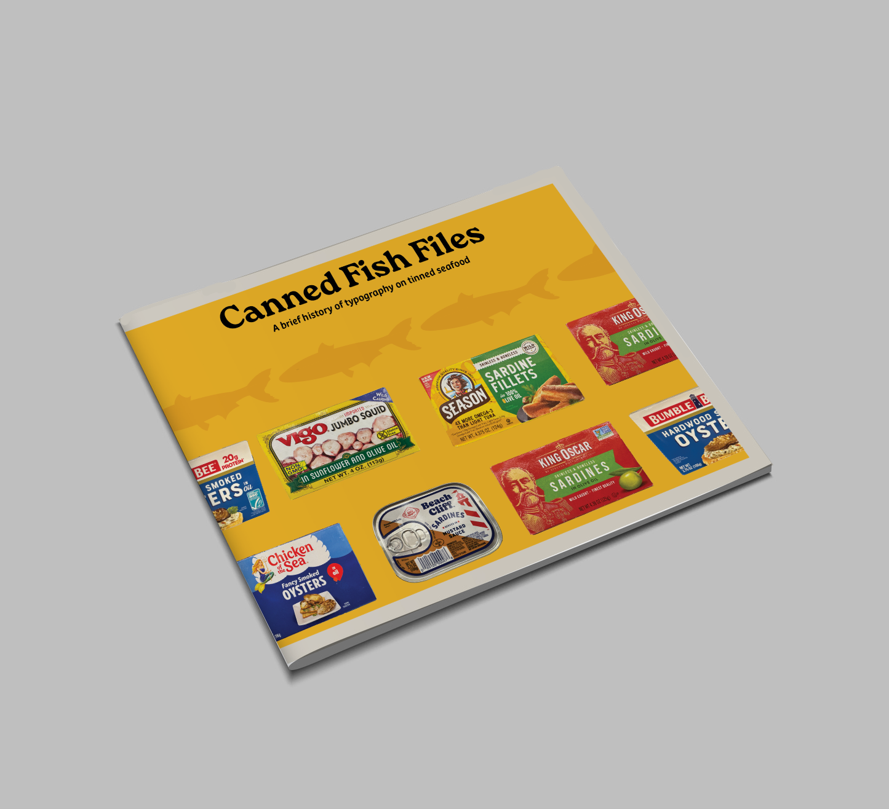
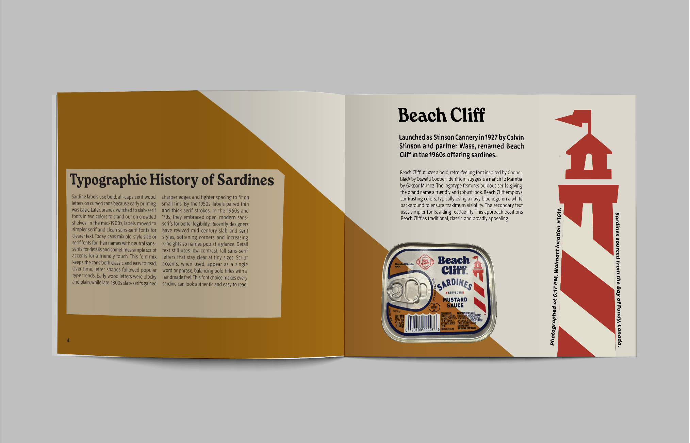
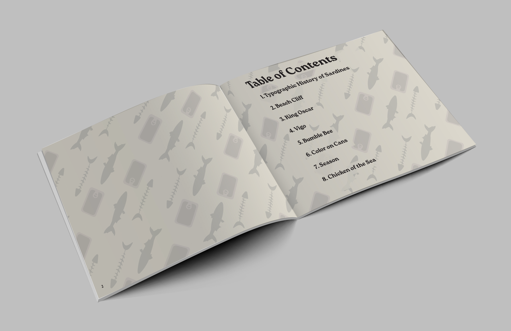
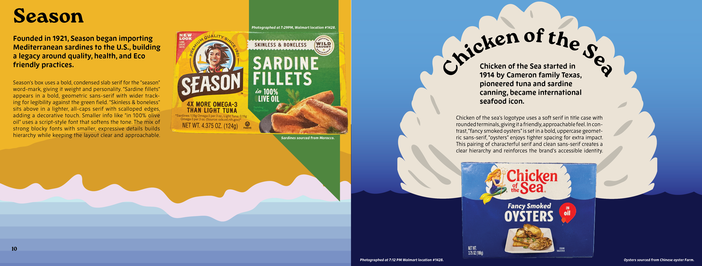
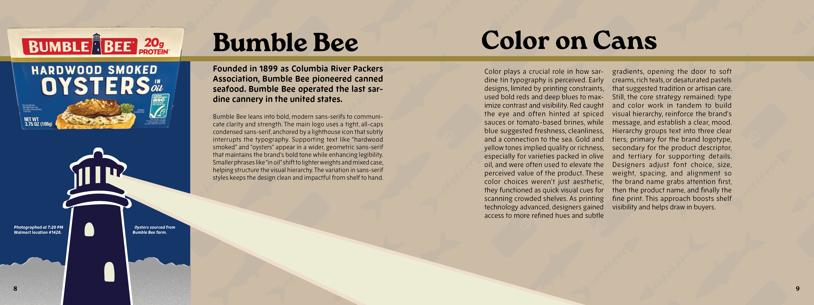

Canned Fish Files
April 29 2025
Context: For a final typography project, I was tasked with identifying and analyzing the history of everyday typography, with the strict constraint of using 100% original visual assets.
The Challenge:Sourcing a diverse collection of sardine cans with unique typographic styles, capturing and processing high-quality original photography, and seamlessly blending these elements into a cohesive booklet layout.
The Solution: I developed a series of layouts that mirrored the distinct design language of each brand’s packaging. To ensure the historical analysis remained legible without disrupting the visual aesthetics, I strategically integrated the text to complement the photographic compositions.
Graphic Design




